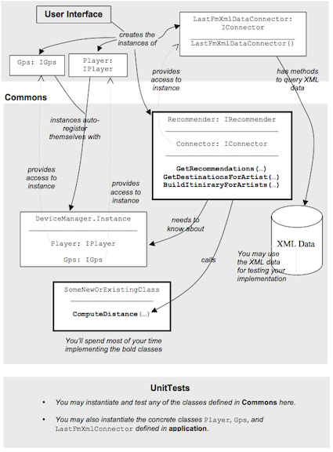

The project is divided in several packages
app – Package containing the UI resources and classes that provide data from Last.FM.
commons - Package containing the data models, interfaces and logic modules used by the MusicPhone UI and tests. You will implement the missing logic inside this project. You may not change any of the interfaces or the DeviceManager. You may extend the behaviour of the Recommender, but without changing its existing behaviour or its interface. You may add one or more classes here if required (for 2nd and 3th part of the project).
commons.dataClasses – Package containing the basic classes representing the entities present in MusicPhone
commons.interfaces – Package containing the interfaces from that are implemented by the different parts of this system. You should not change any of those.
commons.xmlData – Package containing the dump of Last.FM response for the API necessary to solve the task in XML format. Those are useful for testing purposes.
commons.dataConnectors – Package containing the implementation of IConnector (LastFmXmlConnector) methods to parse the Last.FM XML files. You may want to instantiate such class for testing purposes.
gps, player and recommender – Packages containing the UIs for the application main components. The UI is bounded to a class (e.g. GpsUI.java and Gps.java) which is the implementation of the interfaces present in commons.interfaces
The application project creates concrete instances of IPlayer, IGps, and IRecommender objects. These instances persist when the application is running. The application will set the Connector property of the Recommender object to an instance of LastFmXmlConnector, which implements the IConnector interface.
Defines access to XML data from Last.FM. The IConnector class you need to test your implementation with preloaded XML data is LastFmXmlConnector. This class has a 0-argument constructor To access the XML data from Commons, use the Connector property of the Recommender class.
Located in the XmlData folder of the Commons package. The LastFmXmlConnector class accesses the files in this folder.
Provides singleton access to instances of the IPlayer and IGps objects. When these objects are instantiated by the Application, they register themselves with the DeviceManager.
